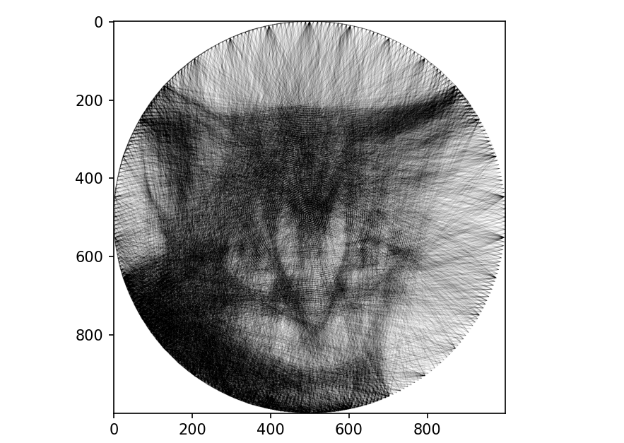

Project overview
I am designing and manufacturing a machine that converts a digital image into physical string art. The design combines a rotating circular platform with a controlled string-positioning mechanism.
Design requirements
- 600 mm Rotating platform diameter
- ~1 sec Target movement per pin
- Reliable Thousands of repeated movements
- Controlled Consistent string tension
String Art Generator

Example of an input image and output image.
Engineering analysis
Motor selection
There are many different available types of motors. There were 3 main candidates
for this project; being stepper, dc or servo. A stepper motor was chosen due to the
balance between discrete step distances and balancing cost. The steps allow for more
predictable movement where errors can not build over time unless a step is missed.
From this point a estimate of the required torque was calculated from the desired angular acceleration and estimated moment of inertia.
Control system
The code can currently take in any image, it then rescales this to
fit within the board. It generates a list of pins that the string
will need to go through using a modified least squares error solver.
The information is then sent to the main NEMA 24 stepper motor, using
a DM556 microstep driver to provide precise movements.
Two additional motors are used to move the string nose and reset
the tensioning mechanism respectively.
Optimisation
I originally created the code for the string generator after completing
a unit on optimisation and numerical methods for engineers. I was inspired
to develop the algorithm using only the methods I had learnt throughout
the unit. This worked well, and I was able to produce results I was happy
with. However, the program had a considerable runtime of around 10 minutes.
I initially reduced the number of pins being sampled at each step, which
improved the runtime, but not to the extent I wanted.
One of the main limitations was the way I was calculating the error. For
every possible line, I calculated a difference matrix between the target
image and the current string pattern and summed all of its entries. Repeating
this calculation hundreds of times for every new line was computationally
expensive. Through further research, I realised that each new line of string
only changes a small number of entries in the matrix. Rather than recalculating
the error across the entire image, I could calculate the change in error only
for the affected entries and add this to the previous value. This significantly
reduced the number of FLOPs required.
I also researched other implementations of string art algorithms and found an
approach that used a very similar method to the one I had developed. After
reading through the accompanying report, I implemented and modified one of
its suggestions. Instead of only considering lines that immediately reduced
the error, the algorithm could accept a line that temporarily increased it
if it created a path that could reduce the error further later on. This
allowed the generated string patterns to capture finer details that could
otherwise be missed.
Current progress
- Mechanical system designed in SolidWorks
- Motor and drivetrain sized
- Initial control software developed
- Manufacturing and assembly (Waiting on Delivery)
- System testing and validation
Next steps & reflection
The next steps in this project involve testing the current design to assess its performance and reliability. Torque calculations were completed during the design process to estimate the requirements of the rotating mechanism and select a suitable motor. However, physical testing will determine whether additional torque is required under real operating conditions. If necessary, the design allows for the addition of a gear or belt drive to increase the available torque. This was initially avoided to maintain tighter tolerances and minimise backlash, as the mechanism must remain accurate and reliable over thousands of repeated movements.